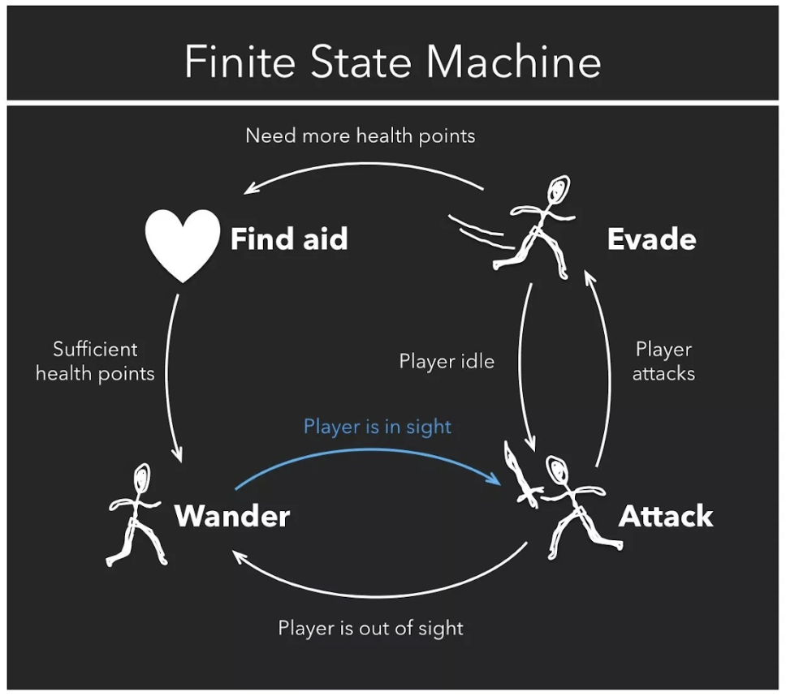

3 types of NPCs
- Hostile
Hostile NPCs are non-Player characters that are designed to attack the player or chase them, these NPCs are what the image above shows, with the AI mostly reacting via aggression. This is like the “Early uses” AI putting pressure on the player,
- Passive
Passive NPCs will not react to the player in any aggressive way, this includes attacking. These NPCs usually fill the role of a tutorial character or a team-mate.
- Neutral
Neutral NPCs are neither good nor bad, because of this factor, they will not attack unless provoked, if not provoked, these NPCs will continue to mind their own business, ignoring you. These Characters will most likely belong as a stranger, someone the character does not know and has no need of interacting with.
(These NPC types are mostly based upon the Minecraft AI system, but can also be seen in the fallout games and other fps)
Like in Pac-Man, the Ghosts change between a chasing action, and a Fleeing action, dependent on the “Power pellet” variable, which gives Pac-Man the ability to “eat” the ghosts, punishing them by sending them back to the starting area.
Exceptions
Some NPCs have privileges coded into the AI to allow the storyline to continue. When it comes to the Main Character, there is a chance they will receive “Plot Armour.” Plot Armour is the act of giving a character a higher chance of survival or better odds in order for the story to progress. In video games, this might mean giving the main character more of a passive playstyle, or the inability to die at all.
